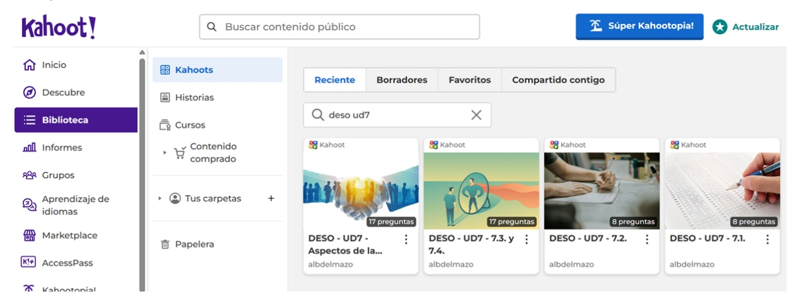

Texto
Adjunto el enlace que explica los instrumentos de evaluación que utilizaremos: https://docs.google.com/document/d/1BKHyM3Ddr9m3XbmrT0MlSQ1EfveqAEHVJIGUGtspBbk/edit?usp=sharing

He utilizado como herramientas cuestionarios (gamificados con Kahoot) para la primera tarea y rúbricas (en Moodle y en papel) para el resto de tareas de la unidad.
Este documento ha sido elaborado durante la Tarea 8.1. del curso COMPETENCIA DIGITAL B2 en marzo de 2026.